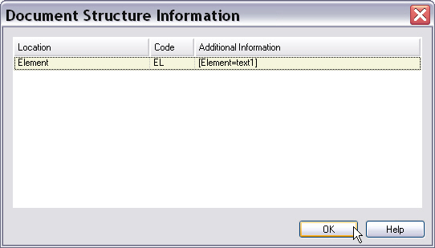

Implementing the File Parser
In this chapter you will learn how to process a native file and make its content available for processing in Trados Studio.
Add the File Parser Class
Once a given file has been found to be valid, the file parser component is meant to process its content, so that it becomes available for interactive translation in the editor of Trados Studio, or for batch processing, e.g. automatic pre-translation, file analysis, word count, etc.
Files usually contain translatable text as well as strings that need to be protected against editing, such as tags in HTML. The application logic of your parser needs to determine what should be exposed as translatable text and which elements need to be protected against editing. Depending on the complexity of the given format a thorough format analysis might be required.
Remember what the simple text format that our file type plug-in needs to process looks like (see below):
[Version=0]
[Element=text1]
Automatically re-open previously edited documents.
[Element=text2]
Prompt me to re-open previously edited documents. Opens a dialog box on start-up.
[Element=text3]
Do <b>not</b> automatically re-open previously edited couments. This is the default option.
[Element=text4]
Prd-Code NCC1504
For more information and processing requirements of this format, please refer back to the chapter Introduction.
Start by adding a class called e.g. SimpleTextParser.cs to your project. Since the parser needs to read text files for processing, add the System.IO namespace to the class. It is recommended that you also add the System.Drawing namespace. This makes it easier to select colour values, which will be useful for highlighting context information later. Also, add the namespace Sdl.FileTypeSupport.Framework.NativeApi for processing native formats. Your file parser class needs to be derived from AbstractNativeFileParser and implement the interfaces INativeContentCycleAware. Also, if you have parser specific settings which you need to apply, you also need to implement the InitializeSettings method of the ISettingsAware interface. The class needs to contain the following members of the INativeContentCycleAware interface:
- SetFileProperties: Retrieves important information on the input file such as file name, . path, and encoding.
- StartOfInput: This method is triggered when the parser starts to read the native input file. You could use this method, for example, to set the progress indicator to the beginning, i.e. 0%. As native input files can be complex and comprehensive, Trados Studio displays a progress bar upon opening a file. The progress of this indicator can be set programmatically.
- EndOfInput: This method is triggered when the parser has reached the end of the native input file. You could use this method, for example, to set a progress indicator to 100%. The minimum amount of code to build a project with a native file parser looks as shown below:
using Sdl.FileTypeSupport.Framework.BilingualApi;
using Sdl.FileTypeSupport.Framework.NativeApi;
namespace Sdk.Snippets.Native
{
public class SimpleTextParser1 : AbstractNativeFileParser, INativeContentCycleAware
{
IPersistentFileConversionProperties _fileConversionProperties;
public void SetFileProperties(IFileProperties properties)
{
_fileConversionProperties = properties.FileConversionProperties;
}
public void StartOfInput()
{
}
public void EndOfInput()
{
}
}
}
Open the Native Input File
Add a BeforeParsing method to open the native input file. You can retrieve the input file name and path through the OriginalFilePath property, which is implemented by the file conversion properties interface. Here you can also use the method OnProgress and set the parsing progress value to 0%. Upon opening a file in Trados Studio a progress bar is raised to indicate the progress of the parsing operation. Through the OnProgress method you can control this progress bar by setting the byte parameter to an appropriate value. For example, after half of the lines in a given text files have been parsed, you can set the parameter to 50. Below you see how we use the BeforeParsing method in our implementation:
protected override void BeforeParsing()
{
// set progress reporter to the beginning
OnProgress(0);
// open the native input file for reading
_reader = new StreamReader(_fileConversionProperties.OriginalFilePath);
}
Note
You may wonder what the difference between BeforeParsing and StartOfInput is. Trados Studio allows you to merge several files into one master document. Such a master document can even contain several documents of different native formats (e.g. DOC and PPT). The BeforeParsing method can be used to execute the application logic required before the start of the whole parsing process such as writing meta information into the header of the master file. StartOfInput can contain the logic applied to a particular native file that is merged with other native files. However, in our simple implementation, this use case is not covered. Here, we only use the BeforeParsing method to set the progress to 0% and to create a text streamreader object.
Parse the Input File
The AbstractNativeFileParser class implements the member DuringParsing, which you need to override in your file parser class. This method reads the input file from the beginning to the end.
protected override bool DuringParsing()
{
// iterate through all lines in the input file
while (!_reader.EndOfStream)
{
ProcessLine(_reader.ReadLine());
}
return false;
}
For each line of text you call a separate ProcessLine() helper function to determine whether a given line contains translatable text or not.
private void ProcessLine(string sLine)
{
if (sLine.StartsWith("[") && sLine.EndsWith("]"))
{
WriteStructureTag(sLine);
WriteContext(sLine);
}
else
{
WriteText(sLine);
}
}
The ProcessLine() helper function works as follows: If a line starts with an opening bracket and ends with a closing bracket, we call separate helper functions called WriteStructureTag() and WriteContext, which we still need to implement.
The WriteStructureTag() helper is used to write any non-translatable information into a structure tag. The non-translatable text (i.e. the strings enclosed in [brackets]) will thus be physically present in the bilingual SDLXliff file, but they will not be exposed to the user. You need to include the non-translatable information in the SDLXliff file, so that the corresponding strings can be written back to the native target file later (generation).
Since users cannot see the structure tag content in the editor of Trados Studio, it is recommended (though not required) that you add some context information, which is then shown in the document structure column on the right-hand side of the editor. You can have your file type plug-in display a short descriptive code. By moving the mouse over the corresponding code or by double-clicking the user can display more detailed information, which can sometimes be useful for the translation process. This is what is actually done through a separate WriteContext() helper function, which we will implement later.
Output Translatable Text
If a given line does not start and end with a bracket, then the string can be considered translatable text, and can therefore be exposed to the user for translation. This is done through the helper function WriteText().
The WriteText() helper uses CreateTextProperties method ofy properties factory to create a text properties object (ITextProperties) that contains the localizable text. The actual text of this property can then be output by using the Output.Text() method.
// output translatable text
private void WriteText(string TextContent)
{
ITextProperties textProperties = PropertiesFactory.CreateTextProperties(TextContent);
Output.Text(textProperties);
}
Output Structure Tags
In the same way the WriteStructureTag() helper function uses the CreateStructureTagProperties method of the properties factory to output the non-translatable lines as structure tags to the intermediate (SDLXliff) file. When creating the tag property the tag content is passed to the Create() method as a parameter. The tag property can then be output to the API using the method Output.StructureTag().
// output non-translatable text as structure tag
private void WriteStructureTag(string TagContent)
{
IStructureTagProperties structureTagProperties = PropertiesFactory.CreateStructureTagProperties(TagContent);
structureTagProperties.DisplayText = TagContent;
Output.StructureTag(structureTagProperties);
}
Output Context Information
Context information can help translators do job more effectively. Therefore it is useful (but not required) to have your file type plug-in output some context information. To this end, we will add the WriteContext() helper function to the file parser class, which looks as shown below:
// output context information, not required, but useful
// information for the translator
private void WriteContext(string ContextContent)
{
IContextProperties contextProperties = PropertiesFactory.CreateContextProperties();
IContextInfo contextInfo = PropertiesFactory.CreateContextInfo(ContextContent);
contextInfo.DisplayCode = "EL";
contextInfo.DisplayName = "Element";
contextInfo.Description = ContextContent;
contextInfo.DisplayColor = Color.Beige;
contextProperties.Contexts.Add(contextInfo);
Output.ChangeContext(contextProperties);
}
We use the CreateContextInfo method of the properties factory to generate a context information object, and then output the context properties. As you can see, the context information object can be configured through a range of parameters. These parameters define what is displayed in the document structure column of the editor. In the editor, users first see the short form (i.e. the display code). In this case, the display code EL is shown. When the mouse pointer is moved over the display code, the display name, here Element is shown in a tooltip. By double-clicking the display code, users can open a separate dialog box, which shows the entire string, i.e. the description, e.g. [Element=text3]. Note that you can specify a background colour for each context element. By assigning different colour to contexts you make it easer for the user to differentiate between different contexts (e.g. headings, paragraphs, footnotes, etc.).
Once you have implemented these functions and built the solution, you can open a sample file in Trados Studio. In the translation editor the file will then look as shown below:

Note that the inline formatting tags are still exposed as normal, translatable text, which should, of course, not be the case. The next chapter (see Processing Inline Formatting) covers the topic of how to enhance the file type plug-in to properly mark up these elements as inline tags and apply the correct formatting to the strings that they enclose.
Also note that the File Type Support Framework has automatically taken care of the segmentation, i.e. the individual sentences appear in separate cells within the editor. This relieves you of implementing a segmentation logic yourself.
Below is an example of what the user sees after double-clicking the context display codes.

Close and Release the Input File
After having parsed the complete file, you should override the AfterParsing method of the abstract native file parser. In this function you can close and release the original file from memory. You can also call the OnProgress method and set the progress value to 100%.
protected override void AfterParsing()
{
//close original file
_reader.Close();
_reader.Dispose();
_reader = null;
//set progres report to 100%
OnProgress(100);
}
Add the Component Reference to the File Type Component Builder
Do not forget to reference the file parser component to the File Type Component Builder by inserting the following method:
/// <summary>
/// Gets the file extractor for this component.
/// </summary>
/// <param name="name">not used here</param>
/// <returns>a FileExtractor containing an Simple Text Parser</returns>
public virtual IFileExtractor BuildFileExtractor(string name)
{
var parser = new SimpleTextParser();
parser.LockPrdCodes = true;
var extractor = this.FileTypeManager.BuildFileExtractor(this.FileTypeManager.BuildNativeExtractor(parser), this);
extractor.AddFileTweaker(new SimpleFilePreTweaker {RequireValidEncoding = false});
return extractor;
}
See Also
Enhancing the File Parser to Process the Settings
Handling Tags During Segmentation
Note
This content may be out-of-date. To check the latest information on this topic, inspect the libraries using the Visual Studio Object Browser.